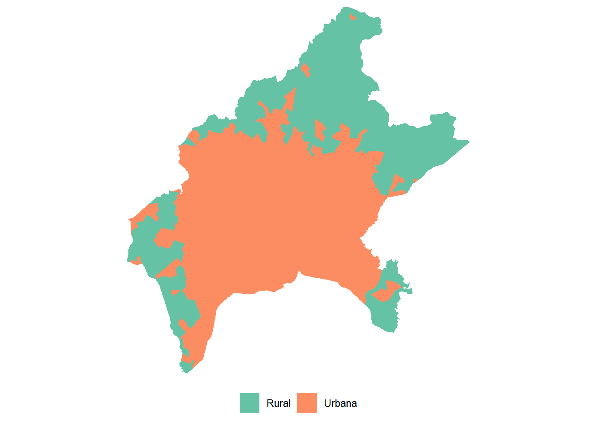
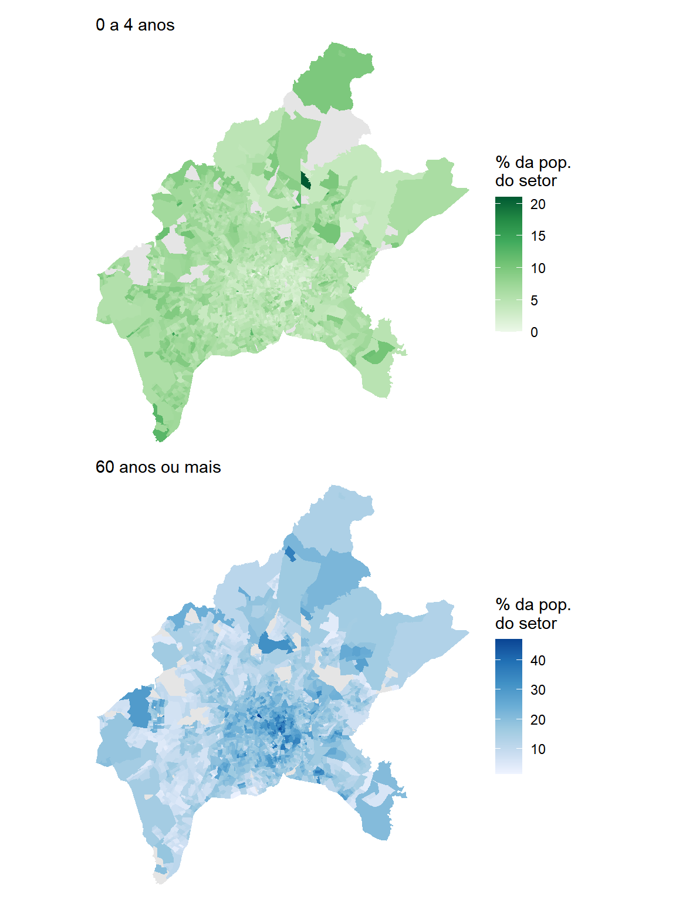
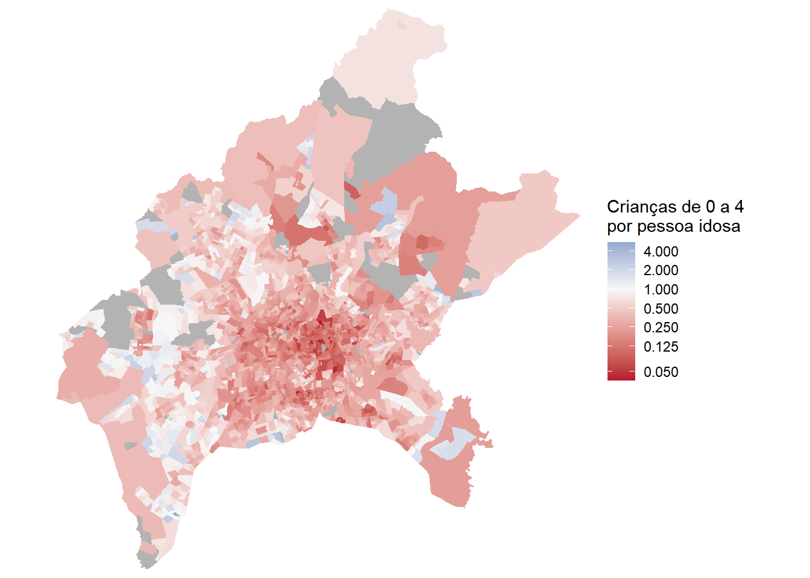

library(tidyverse)
library(censobr)
library(geobr)
library(sf)
library(srvyr)
library(patchwork)12 Demografia
12.1 Introdução
Toda decisão de política pública que tem endereço depende de uma pergunta anterior, que é saber onde vive o público que ela pretende alcançar. Um centro de convivência para pessoas idosas precisa estar perto de quem já parou de trabalhar. Uma creche precisa estar perto de quem tem filho pequeno. Já políticas baseadas em aspectos raciais precisa entender onde se concentra a população indígena e negra, por exemplo. Nenhuma dessas perguntas se responde com o total do município, porque o município é grande demais para caber numa decisão de localização.
O Censo Demográfico é a única fonte brasileira que responde a essas perguntas com elevada granularidade intraurbana, e faz isso para os cinco mil e poucos municípios do país ao mesmo tempo. Este capítulo mostra como transformar esse material em indicadores utilizáveis, percorrendo seis recortes temáticos: (i) idade; (ii) cor ou raça; (iii) quem responde pelo domicílio; (iv) arranjo domiciliar; (v) deficiência; e (vi) naturalidade.
Para os quatro primeiros, trabalharemos com os dados agregados por setor censitário, que nascem do Questionário Básico. Os dois últimos não existem nos agregados, porque o Questionário Básico não os investiga. Para alcançá-los é preciso recorrer aos microdados da amostra, que são divulgados por área de ponderação. Trocar de fonte significa, portanto, trocar de escala, e o capítulo percorre as duas na ordem em que elas se impõem, primeiro o que se pode fazer com o maior detalhe territorial disponível1, depois o que só a amostra permite perguntar.
Entre os recortes dos agregados, o do arranjo domiciliar é o menos explorado e talvez o mais interessante. Os agregados informam não apenas quantas pessoas moram em cada setor, mas também como elas se organizam dentro do domicílio, quem é a pessoa responsável e se há cônjuge e filhos. É a partir daí que se chega a indicadores como o de domicílios monoparentais, que dificilmente aparecem em relatórios técnicos e que mudam bastante a leitura de um território.
O município escolhido para o capítulo é Goiânia (GO). Os indicadores dos agregados são calculados para os setores censitários do município no Censo 2022, os da amostra para as áreas de ponderação do Censo 20102, e sempre que a comparação entre as duas edições for possível ela é feita.
Antes de qualquer cálculo, vale reter uma advertência: nenhum dos indicadores deste capítulo é uma contagem bruta. Todos são proporções, e a escolha de qual total vai no denominador é a decisão que mais afeta o resultado. Essa escolha reaparecerá em cada seção, e em uma delas ela muda de uma linha para a outra.
Comecemos carregando os pacotes usados ao longo do capítulo3.
12.2 Estruturação dos dados dos agregados do Censo de 2022
Começamos pelos agregados, que sustentam a maior parte do capítulo. Os indicadores construídos até a Seção 12.7 vêm de três dos arquivos temáticos apresentados na Tabela 7.2 do Capítulo 7. Do arquivo Básico vem a população total e a identificação geográfica. Do arquivo Pessoas vêm os blocos de Demografia, Cor ou Raça e Parentesco. Do arquivo Domicílio vem o total de domicílios particulares permanentes ocupados e a contagem de crianças. Os microdados da amostra entram mais adiante, na Seção 12.8, com uma preparação própria.
O primeiro passo é obter o código do município. Como visto no Capítulo 6, a função lookup_muni() do geobr faz essa busca pelo nome, e a partir da versão 2.0.0 do pacote ela exige que o ano de referência seja informado.
goiania <- lookup_muni(name_muni = "Goiânia", year = 2022)$code_muni
goiania[1] 5208707Com o código em mãos, lemos os três arquivos. Em todos eles o filtro por município vem antes do collect(), para que o Arrow leia do disco apenas os setores de Goiânia, conforme discutido na Seção 7.4.1. As variáveis já são selecionadas na leitura, e não depois, pelo mesmo motivo.
sc_basico <- read_tracts(dataset = "Basico", year = 2022) |>
filter(code_muni == goiania) |>
select(code_tract, name_subdistrict, situacao, V0001) |>
collect()
nrow(sc_basico)[1] 2310Do arquivo Pessoas vêm quase todas as variáveis do capítulo. São dezoito colunas, distribuídas pelos três blocos temáticos que nos interessam. A Tabela 12.1 descreve cada uma delas.
| Arquivo | Bloco | Código original | Nome atribuído | Descrição |
|---|---|---|---|---|
| Básico | — | V0001 |
pop |
População total residente |
| Pessoas | Demografia | demografia_V01031 |
pess_0_4 |
Pessoas de 0 a 4 anos |
| Pessoas | Demografia | demografia_V01040 |
id_60_69 |
Pessoas de 60 a 69 anos |
| Pessoas | Demografia | demografia_V01041 |
id_70m |
Pessoas de 70 anos ou mais |
| Pessoas | Cor ou Raça | raca_V01317 |
branca |
Pessoas de cor ou raça branca |
| Pessoas | Cor ou Raça | raca_V01318 |
preta |
Pessoas de cor ou raça preta |
| Pessoas | Cor ou Raça | raca_V01319 |
amarela |
Pessoas de cor ou raça amarela |
| Pessoas | Cor ou Raça | raca_V01320 |
parda |
Pessoas de cor ou raça parda |
| Pessoas | Cor ou Raça | raca_V01321 |
indigena |
Pessoas de cor ou raça indígena |
| Pessoas | Cor ou Raça | raca_V01340 |
resp_f_preta |
Responsável preta, sexo feminino |
| Pessoas | Cor ou Raça | raca_V01344 |
resp_f_parda |
Responsável parda, sexo feminino |
| Pessoas | Parentesco | parentesco_V01062 |
resp_m |
Pessoa responsável, sexo masculino |
| Pessoas | Parentesco | parentesco_V01063 |
resp_f |
Pessoa responsável, sexo feminino |
| Pessoas | Parentesco | parentesco_V01191 |
arr_casal |
Responsável e cônjuge sem filhos |
| Pessoas | Parentesco | parentesco_V01192 |
arr_ambos |
Responsável e cônjuge com filho de ambos |
| Pessoas | Parentesco | parentesco_V01193 |
arr_um |
Responsável e cônjuge com filho de um deles |
| Pessoas | Parentesco | parentesco_V01194 |
arr_mono |
Responsável sem cônjuge com filhos ou enteados |
| Pessoas | Parentesco | parentesco_V01195 |
arr_outros |
Outros tipos de composição |
| Pessoas | Parentesco | parentesco_V01203 |
mono_m |
Monoparental, responsável masculino |
| Pessoas | Parentesco | parentesco_V01204 |
mono_f |
Monoparental, responsável feminino |
| Domicílio | Parte 1 | domicilio01_V00001 |
dppo |
Domicílios particulares permanentes ocupados |
A leitura do arquivo Pessoas segue a mesma lógica da anterior. Repare que os códigos não guardam relação semântica com o conteúdo, o que torna a consulta ao dicionário obrigatória e a atribuição de nomes legíveis quase indispensável.
sc_pessoas <- read_tracts(dataset = "Pessoas", year = 2022) |>
filter(code_muni == goiania) |>
select(code_tract,
demografia_V01031, demografia_V01040, demografia_V01041,
raca_V01317, raca_V01318, raca_V01319, raca_V01320, raca_V01321,
raca_V01340, raca_V01344,
parentesco_V01062, parentesco_V01063,
parentesco_V01191, parentesco_V01192, parentesco_V01193,
parentesco_V01194, parentesco_V01195,
parentesco_V01203, parentesco_V01204) |>
collect()Do arquivo Domicílio vem uma única coluna, o total de domicílios particulares permanentes ocupados, que servirá de denominador para os indicadores de arranjo domiciliar.
sc_domicilio <- read_tracts(dataset = "Domicilio", year = 2022) |>
filter(code_muni == goiania) |>
select(code_tract, domicilio01_V00001) |>
collect()Com os três objetos em memória, resta juntá-los pelo código do setor e atribuir os nomes da Tabela 12.1. O resultado é uma única tabela com uma linha por setor censitário, que servirá de base para todo o capítulo.
goiania_sc <- sc_basico |>
left_join(sc_pessoas, by = "code_tract") |>
left_join(sc_domicilio, by = "code_tract") |>
rename(
pop = V0001,
pess_0_4 = demografia_V01031,
id_60_69 = demografia_V01040,
id_70m = demografia_V01041,
branca = raca_V01317,
preta = raca_V01318,
amarela = raca_V01319,
parda = raca_V01320,
indigena = raca_V01321,
resp_f_preta = raca_V01340,
resp_f_parda = raca_V01344,
resp_m = parentesco_V01062,
resp_f = parentesco_V01063,
arr_casal = parentesco_V01191,
arr_ambos = parentesco_V01192,
arr_um = parentesco_V01193,
arr_mono = parentesco_V01194,
arr_outros = parentesco_V01195,
mono_m = parentesco_V01203,
mono_f = parentesco_V01204,
dppo = domicilio01_V00001
)
dim(goiania_sc)[1] 2310 24Por fim, precisamos da geometria dos setores para produzir os mapas. A malha vem do geobr pela função read_census_tract(), já utilizada no Capítulo 7, e é unida à tabela de indicadores pela mesma coluna code_tract.
goiania_geo <- read_census_tract(
code_tract = goiania,
year = 2022,
simplified = FALSE
) |>
select(code_tract) |>
left_join(goiania_sc, by = "code_tract")Antes de processar e mapear os dados do Censo para Goiânia, cabe uma advertência cartográfica que vale para todas as figuras deste capítulol. Diz respeito à situação do setor censitário (coluna situacao), que indica se ele é urbano ou rural. Observe na Tabela 12.2 produzida abaixo o total de população para ambos casos:
goiania_sc |>
group_by(situacao) |>
summarise(setores = n(), populacao = sum(pop, na.rm = TRUE)) |>
mutate(perc_populacao = 100 * populacao / sum(populacao)) |>
knitr::kable(
col.names = c("Situação", "Setores", "População", "% da população"),
digits = 2,
format.args = list(big.mark = ".", decimal.mark = ",")
)| Situação | Setores | População | % da população |
|---|---|---|---|
| Rural | 19 | 2.180 | 0,15 |
| Urbana | 2.291 | 1.435.186 | 99,85 |
Na Figura 12.1, são espacializados onde cada tipo se encontra:
ggplot(goiania_geo) +
geom_sf(aes(fill = situacao), color = NA) +
scale_fill_manual(
values = c("Urbana" = "gray80", "Rural" = "#1B7837"),
name = NULL
) +
coord_sf(expand = FALSE) +
theme_minimal() +
theme(axis.text = element_blank(), axis.ticks = element_blank(),
panel.grid = element_blank(), legend.position = "bottom")
Os setores rurais formam uma faixa quase contínua ao longo das divisas do município, mais espessa ao norte, nordeste e a oeste, contornando a mancha urbana. Os 19 setores rurais de Goiânia abrigam pouco mais de dois mil moradores, ou 0,15% da população, e ainda assim respondem por cerca de 40% da área mapeada. O polígono rural médio tem 15 km², contra 0,19 km² do urbano, uma diferença de quase oitenta vezes. A consequência é que as manchas mais extensas de qualquer mapa deste capítulo correspondem a setores praticamente vazios, e o olho tende a lhes atribuir um peso que a população não justifica. Os indicadores calculados para esses setores, quando existem, ficam próximos dos urbanos, de modo que eles não deslocam os resultados. O cuidado, portanto, é de leitura visual e não de cálculo, e ele será retomado sempre que este capítulo fizer afirmações sobre centro e periferia.
Com a base montada, podemos começar pelo recorte que mais mudou no Brasil das últimas duas décadas.
12.3 Estrutura etária e envelhecimento
A distribuição da população por idade é um dos retratos mais imediato que um censo oferece, sendo os dois extremos dessa distribuição aspectos relevantes para o planejamento urbano. De um lado estão as crianças pequenas, que demandam creche, atenção básica à saúde e espaços de convivência próximos de casa. Do outro estão as pessoas idosas, que demandam acessibilidade nas calçadas, atenção domiciliar e equipamentos que não exijam deslocamentos longos. O bloco de Demografia do arquivo Pessoas entrega as duas pontas prontas, com a faixa de 0 a 4 anos em uma variável e as faixas de 60 a 69 e de 70 anos ou mais em outras duas, que somamos para chegar ao contingente de 60 anos ou mais. Esse corte dos 60 anos não é arbitrário, já que é o limiar adotado pela Lei nº 10.741, de 2003, que institui o Estatuto da Pessoa Idosa e assegura direitos às pessoas com idade igual ou superior a essa (Brasil, 2003).
Abaixo, produz-se uma primeira sumarização das proporções de cada grupo em Goiânia como um todo:
goiania_geo <- goiania_geo |>
mutate(
idosos = id_60_69 + id_70m,
perc_0_4 = 100 * pess_0_4 / pop,
perc_idosos = 100 * idosos / pop
)
summary(goiania_geo$perc_0_4) Min. 1st Qu. Median Mean 3rd Qu. Max. NAs
0.000 4.329 5.540 5.642 6.834 21.053 42 summary(goiania_geo$perc_idosos) Min. 1st Qu. Median Mean 3rd Qu. Max. NAs
1.446 10.616 15.961 16.136 20.209 46.875 46 As duas distribuições têm amplitudes bem diferentes. A proporção de crianças de 0 a 4 anos vai de zero a 21% dos residentes, com mediana de 5,5%, próxima dos 5,8% do município como um todo. Já a proporção de pessoas de 60 anos ou mais vai de 1,4% a 46,9%, com mediana de 16,0% contra 15,0% no município. Há setores em que quase metade dos moradores já passou dos 60 anos, e essa amplitude é o primeiro sinal de que o envelhecimento de Goiânia está longe de se distribuir de maneira homogênea pelo território.
Levar os dois indicadores ao mapa mostra que eles descrevem um padrão bem marcado. Como partilham a mesma unidade, a porcentagem da população do setor, podemos exibi-los lado a lado com o patchwork.
mapa_criancas <- ggplot(goiania_geo) +
geom_sf(aes(fill = perc_0_4), color = NA) +
scale_fill_distiller(palette = "Greens", direction = 1,
name = "% da pop.\ndo setor",
na.value = "gray90") +
coord_sf(expand = FALSE) +
labs(subtitle = "0 a 4 anos") +
theme_minimal() +
theme(axis.text = element_blank(), axis.ticks = element_blank(),
panel.grid = element_blank())
mapa_idosos <- ggplot(goiania_geo) +
geom_sf(aes(fill = perc_idosos), color = NA) +
scale_fill_distiller(palette = "Blues", direction = 1,
name = "% da pop.\ndo setor",
na.value = "gray90") +
coord_sf(expand = FALSE) +
labs(subtitle = "60 anos ou mais") +
theme_minimal() +
theme(axis.text = element_blank(), axis.ticks = element_blank(),
panel.grid = element_blank())
mapa_criancas + mapa_idosos
Note que os dois mapas são quase o inverso um do outro. A área central consolidada reúne as maiores proporções de pessoas idosas e as menores de crianças pequenas, ao passo que as bordas do município apresentam o padrão oposto. O coeficiente de correlação de Pearson4 entre os dois indicadores obtido com a função cor() abaixo confirma o que o padrão dos mapas acima sugere:
cor(goiania_geo$perc_0_4, goiania_geo$perc_idosos,
use = "complete.obs")[1] -0.6535454O argumento use = "complete.obs" descarta os setores em que algum dos dois indicadores está ausente, sem o que o resultado seria NA. O valor obtido, de −0,65, é uma correlação negativa forte para dados intraurbanos. Quando dois indicadores se opõem dessa maneira, vale condensá-los em um só. A razão entre crianças de 0 a 4 anos e pessoas de 60 anos ou mais produzida abaixo faz exatamente isso, informando quantas crianças pequenas existem para cada pessoa idosa no setor. Valores abaixo de 1 indicam predomínio de pessoas idosas e valores acima de 1 indicam predomínio de crianças pequenas.
goiania_geo <- goiania_geo |>
mutate(razao_cri_idoso = pess_0_4 / idosos)
summary(goiania_geo$razao_cri_idoso) Min. 1st Qu. Median Mean 3rd Qu. Max. NAs
0.0000 0.2202 0.3556 0.5022 0.5932 5.4167 62 No município como um todo há 0,39 criança de 0 a 4 anos para cada pessoa de 60 anos ou mais, e a mediana entre os setores é de 0,36. Somente 232 dos 2.248 setores com dado disponível, ou 10,3% deles, têm mais crianças pequenas do que pessoas idosas.
O indicador pede um tipo de escala de cor diferente das que usamos até aqui. Todos os mapas anteriores do capítulo mostram grandezas que crescem em uma única direção, e para elas basta um gradiente que vai do claro ao escuro. A razão entre crianças e pessoas idosas tem um centro com significado próprio, o valor 1, que separa os setores em que predominam crianças daqueles em que predominam pessoas idosas. O que se quer, portanto, é uma escala divergente, com uma cor de cada lado e o branco exatamente sobre o 1.
Há ainda uma segunda dificuldade. A distribuição é assimétrica, com metade dos setores abaixo de 0,36 e um máximo de 5,4. Pior que isso, a escala natural de uma razão é multiplicativa e não aditiva, pois o valor 0,5 significa duas vezes mais pessoas idosas do que crianças, enquanto o 2 significa o dobro de crianças. Os dois estão à mesma distância do 1, mas uma escala linear colocaria o 0,5 muito mais perto do centro do que o 2. A solução para ambos os problemas é a mesma, que é transformar a escala em logarítmica, conforme o exemplo abaixo:
# Mapa:
ggplot(goiania_geo) +
geom_sf(aes(fill = razao_cri_idoso), color = NA) +
scale_fill_gradient2(
low = "#B2182B",
mid = "#F7F7F7",
high = "#2166AC",
midpoint = 1,
transform = "log2",
breaks = c(0.05, 0.125, 0.25, 0.5, 1, 2, 4),
name = "Crianças de 0 a 4\npor pessoa idosa",
na.value = "gray70"
) +
coord_sf(expand = FALSE) +
theme_minimal() +
theme(axis.text = element_blank(), axis.ticks = element_blank(),
panel.grid = element_blank())
Nota
A função scale_fill_gradient2() constrói uma escala divergente a partir de três cores, uma para o extremo inferior (low), uma para o centro (mid) e uma para o extremo superior (high). Ela difere do scale_fill_distiller() usado nos mapas anteriores, que trabalha com um gradiente de sentido único, indo do claro ao escuro. O argumento midpoint informa sobre qual valor dos dados a cor central deve cair, e é ele que assenta o branco exatamente sobre o 1, deixando o vermelho para os setores com predomínio de pessoas idosas e o azul para aqueles com predomínio de crianças pequenas.
O argumento transform = "log2" aplica o logaritmo de base 2 à escala de cor, sem alterar os dados nem o indicador calculado. A transformação atende à natureza multiplicativa da razão, fazendo com que 1/2 e 2 fiquem à mesma distância do centro, assim como 1/4 e 4. Já os valores passados em breaks são os que aparecem na legenda, e é importante notar que eles são declarados em unidades do próprio indicador orginal, e não em unidades do logaritmo.
Por fim, o na.value define a cor dos setores sem valor (NA) a representar. São 67 dos 2.310 setores de Goiânia.
O mapa condensa em uma imagem o que os dois anteriores mostravam separadamente. O vermelho domina a área central e o azul aparece nas franjas, com as manchas azuis mais intensas nas áreas de ocupação recente. Um equipamento voltado à primeira infância e outro voltado à população idosa provavelmente não disputarão o mesmo terreno em Goiânia.
Cabe uma ressalva importante de planejamento territorial, neste caso. Maior proporção de crianças em um determinado local não indica necessariamente uma maior demanda por serviços relacionados a esse público, já que o valor total deve ser levado em consideração. Seria mais informativo um mapa da densidade populacional deste grupo na região de interesse (medido em pessoas/km², por exemplo5).
Agregar os setores em recortes maiores ajuda a identificar regiões da cidade que conhecemos pelo nome. Goiânia não possui a divisão por bairros nos Agregados, e a coluna name_neighborhood vem inteiramente vazia para o município, situação que o leitor deve sempre verificar antes de contar com esse recorte. O nível imediatamente disponível acima do setor é o subdistrito.
Ao agregar, somamos cada variável original separadamente, em vez de somar o indicador já calculado por setor. A diferença importa. Quando uma das parcelas está ausente em um setor, a soma id_60_69 + id_70m daquele setor também fica ausente, e somar essa coluna descartaria a contribuição inteira do setor enquanto a população dele continuaria no denominador. Somando cada parcela por conta própria, aproveitamos tudo que foi divulgado.
## Produzindo tabela agregada por subdistrito em Goiânia:
idosos_sub <- goiania_geo |>
st_drop_geometry() |>
filter(!is.na(name_subdistrict)) |>
group_by(name_subdistrict) |>
summarize(
pop = sum(pop, na.rm = TRUE),
idosos = sum(id_60_69, na.rm = TRUE) + sum(id_70m, na.rm = TRUE),
dppo = sum(dppo, na.rm = TRUE)
) |>
filter(dppo >= 1000) |> # Filtrando somente bairros com mais domicílios
mutate(perc_idosos = 100 * idosos / pop)
## Produzindo tabela somente com os maiores e menores casos:
bind_rows(
idosos_sub |> slice_max(perc_idosos, n = 5),
idosos_sub |> slice_min(perc_idosos, n = 5)
) |>
select(name_subdistrict, pop, perc_idosos) |>
knitr::kable(
col.names = c("Subdistrito", "População", "% com 60 anos ou mais"),
digits = 1,
format.args = list(big.mark = ".", decimal.mark = ",")
)| Subdistrito | População | % com 60 anos ou mais |
|---|---|---|
| U.T.P. Oeste | 24.939 | 31,2 |
| U.T.P. Aeroporto | 8.409 | 27,7 |
| U.T.P. Sul | 9.084 | 27,5 |
| U.T.P. Central | 17.728 | 27,2 |
| U.T.P. Nova Suiça | 7.672 | 26,6 |
| U.T.P. Parque Bom Jesus | 15.413 | 6,9 |
| U.T.P. Zona Rural | 67.570 | 8,5 |
| U.T.P. Vila Rizzo | 22.272 | 8,6 |
| U.T.P. Parque Santa Rita | 34.620 | 8,9 |
| U.T.P. Baliza-Itaipu | 47.015 | 9,0 |
O contraste é de mais de quatro vezes entre o subdistrito mais envelhecido e o mais jovem. Guardemos os nomes que aparecem no topo da tabela, porque eles voltarão a aparecer na próxima seção, e com um sinal invertido.
12.4 População preta e parda
O Censo classifica a cor ou raça em cinco categorias, branca, preta, amarela, parda e indígena, todas por autodeclaração. Em análises de desigualdade, é frequente somar as categorias preta e parda em um único grupo, procedimento que o próprio IBGE adota na publicação Desigualdades Sociais por Cor ou Raça no Brasil, onde o grupo aparece sob a denominação “pretos ou pardos” (Instituto Brasileiro de Geografia e Estatística, 2022). Comecemos pelo quadro geral do município.
composicao_raca <- goiania_sc |>
summarize(
Branca = sum(branca, na.rm = TRUE),
Preta = sum(preta, na.rm = TRUE),
Amarela = sum(amarela, na.rm = TRUE),
Parda = sum(parda, na.rm = TRUE),
Indígena = sum(indigena, na.rm = TRUE)
) |>
pivot_longer(everything(), names_to = "cor_raca", values_to = "pessoas") |>
mutate(perc = 100 * pessoas / sum(pessoas))
composicao_raca |>
knitr::kable(
col.names = c("Cor ou raça", "Pessoas", "% do total"),
digits = 1,
format.args = list(big.mark = ".", decimal.mark = ",")
)| Cor ou raça | Pessoas | % do total |
|---|---|---|
| Branca | 626.649 | 43,7 |
| Preta | 113.975 | 7,9 |
| Amarela | 4.125 | 0,3 |
| Parda | 689.331 | 48,0 |
| Indígena | 1.097 | 0,1 |
Nota
Lembre-se de que o pivot_longer(), visto no Capítulo 3, empilha em duas colunas aquelas indicadas em cols, guardando os nomes originais na coluna nomeada por names_to e os valores na coluna nomeada por values_to. Aqui o summarize() produziu uma tabela de uma única linha e cinco colunas, e o pivot_longer() a converte em cinco linhas, formato adequado tanto para a tabela impressa quanto para os gráficos. O seletor everything() indica que todas as colunas devem ser empilhadas, e é a forma mais curta de escrever isso quando não há coluna identificadora a preservar.
Pretos e pardos somados respondem por pouco mais da metade dos residentes de Goiânia. O indicador por setor é construído da mesma forma que o anterior, somando as duas categorias e dividindo pela população total do setor.
goiania_geo <- goiania_geo |>
mutate(
pretos_pardos = preta + parda,
perc_pretos_pardos = 100 * pretos_pardos / pop
)
summary(goiania_geo$perc_pretos_pardos) Min. 1st Qu. Median Mean 3rd Qu. Max. NAs
11.42 46.85 58.63 55.36 65.97 94.20 47 O mapa a seguir mostra a distribuição desse indicador. Diferentemente do caso anterior, aqui não faz sentido apresentar a contagem, porque a pergunta é sobre composição da população e não sobre volume de atendimento.
ggplot(goiania_geo) +
geom_sf(aes(fill = perc_pretos_pardos), color = NA) +
scale_fill_distiller(palette = "Oranges", direction = 1,
name = "% pretos\ne pardos",
na.value = "gray90") +
coord_sf(expand = FALSE) +
theme_minimal() +
theme(axis.text = element_blank(), axis.ticks = element_blank(),
panel.grid = element_blank())
O padrão espacial é nítido, com uma mancha clara e contínua concentrada na região central, cercada por valores altos em todas as direções, similar aos locais que concentram população mais idosa no município (Figura 12.3). Repetindo a agregação por subdistrito, o contraste fica explícito.
raca_sub <- goiania_geo |>
st_drop_geometry() |>
filter(!is.na(name_subdistrict)) |>
group_by(name_subdistrict) |>
summarise(
pop = sum(pop, na.rm = TRUE),
pretos_pardos = sum(preta, na.rm = TRUE) + sum(parda, na.rm = TRUE),
dppo = sum(dppo, na.rm = TRUE)
) |>
filter(dppo >= 1000) |>
mutate(perc_pretos_pardos = 100 * pretos_pardos / pop)
bind_rows(
raca_sub |> slice_max(perc_pretos_pardos, n = 5),
raca_sub |> slice_min(perc_pretos_pardos, n = 5)
) |>
select(name_subdistrict, pop, perc_pretos_pardos) |>
knitr::kable(
col.names = c("Subdistrito", "População", "% pretos e pardos"),
digits = 1,
format.args = list(big.mark = ".", decimal.mark = ",")
)| Subdistrito | População | % pretos e pardos |
|---|---|---|
| U.T.P. São Domingos | 23.563 | 71,9 |
| U.T.P. Jardim Primavera | 7.376 | 70,6 |
| U.T.P. Baliza-Itaipu | 47.015 | 69,7 |
| U.T.P. Zona Rural | 67.570 | 69,6 |
| U.T.P. Vila Pedroso | 19.658 | 69,5 |
| U.T.P. Oeste | 24.939 | 24,2 |
| U.T.P. Autódromo ou Parque Lozandes | 10.699 | 26,4 |
| U.T.P. Marista | 11.173 | 26,5 |
| U.T.P. Nova Suiça | 7.672 | 26,6 |
| U.T.P. Bueno | 53.221 | 27,4 |
Observe como alguns subdistritos que aparecem entre os mais envelhecidos (Tabela 12.3) são também os mesmos que aparecem entre os de menor proporção de população preta e parda (e vice-versa). Envelhecimento e composição por cor ou raça não são fenômenos independentes no território brasileiro, porque ambos guardam relação com a renda e com a trajetória histórica de ocupação da cidade.
12.5 Responsável pelo domicílio
Até aqui, todos os indicadores tiveram a população total do setor no denominador. Esta seção muda de unidade e passa a falar de domicílios, ou mais precisamente das pessoas responsáveis por eles. Cada domicílio tem exatamente uma pessoa responsável, de modo que contar responsáveis é uma outra forma de contar domicílios.
O bloco de Parentesco traz a pessoa responsável desagregada por sexo, nas variáveis resp_m e resp_f. O total de responsáveis é a soma das duas.
goiania_geo <- goiania_geo |>
mutate(
resp_total = resp_m + resp_f,
perc_resp_f = 100 * resp_f / resp_total
)
goiania_geo |>
st_drop_geometry() |>
summarise(
responsaveis = sum(resp_m, na.rm = TRUE) + sum(resp_f, na.rm = TRUE),
resp_femininas = sum(resp_f, na.rm = TRUE)
) |>
mutate(perc_femininas = 100 * resp_femininas / responsaveis)# A tibble: 1 × 3
responsaveis resp_femininas perc_femininas
<dbl> <dbl> <dbl>
1 549551 275035 50.0Metade dos domicílios de Goiânia é chefiada por uma mulher. O segundo indicador desta seção pergunta outra coisa, que é qual a proporção dessas responsáveis mulheres que são pretas ou pardas. E aqui está o ponto metodológico mais importante do capítulo.
O numerador é a soma de resp_f_preta e resp_f_parda, que já vêm cruzadas por sexo no arquivo. O denominador não é o total de responsáveis, nem o total de domicílios, e sim o total de responsáveis mulheres. Trocar esse denominador não produz um resultado ligeiramente diferente, produz um indicador que responde a outra pergunta.
goiania_geo <- goiania_geo |>
mutate(
resp_f_negra = resp_f_preta + resp_f_parda,
perc_resp_f_negra = 100 * resp_f_negra / resp_f
)
goiania_geo |>
st_drop_geometry() |>
summarise(
resp_f_negra = sum(resp_f_preta, na.rm = TRUE) + sum(resp_f_parda, na.rm = TRUE),
resp_f = sum(resp_f, na.rm = TRUE),
resp_total = sum(resp_m, na.rm = TRUE) + sum(resp_f, na.rm = TRUE)
) |>
mutate(
sobre_resp_femininas = 100 * resp_f_negra / resp_f,
sobre_resp_totais = 100 * resp_f_negra / resp_total
)# A tibble: 1 × 5
resp_f_negra resp_f resp_total sobre_resp_femininas sobre_resp_totais
<dbl> <dbl> <dbl> <dbl> <dbl>
1 155228 275035 549551 56.4 28.2As duas contas dão respostas legítimas para perguntas diferentes. A primeira diz que, entre as mulheres que respondem pelo domicílio em Goiânia, cerca de 56% são pretas ou pardas. A segunda diz que cerca de 28% de todos os domicílios do município são chefiados por mulheres pretas ou pardas. A primeira descreve a composição de um grupo, a segunda descreve a incidência de um arranjo.
Os dois mapas a seguir tornam a diferença visível. Repare que as legendas trazem o denominador escrito, e não apenas o numerador.
mapa_resp_f <- ggplot(goiania_geo) +
geom_sf(aes(fill = perc_resp_f), color = NA) +
scale_fill_distiller(palette = "BuPu", direction = 1,
name = "% do total de\nresponsáveis",
na.value = "gray90") +
coord_sf(expand = FALSE) +
labs(subtitle = "Responsáveis mulheres") +
theme_minimal() +
theme(axis.text = element_blank(), axis.ticks = element_blank(),
panel.grid = element_blank())
mapa_resp_negra <- ggplot(goiania_geo) +
geom_sf(aes(fill = perc_resp_f_negra), color = NA) +
scale_fill_distiller(palette = "BuPu", direction = 1,
name = "% das responsáveis\nmulheres",
na.value = "gray90") +
coord_sf(expand = FALSE) +
labs(subtitle = "Responsáveis mulheres pretas ou pardas") +
theme_minimal() +
theme(axis.text = element_blank(), axis.ticks = element_blank(),
panel.grid = element_blank())
mapa_resp_f + mapa_resp_negra
O mapa da esquerda é relativamente uniforme, com a chefia feminina distribuída por toda a cidade. O da direita reproduz de perto os mapas de idade e de cor ou raça das seções anteriores, reforçando mais um aspecto do padrão socioeconômico encontrado.
12.6 O que mudou desde 2010
Os três indicadores construídos até aqui existem também no Censo 2010, o que permite medir a direção e a intensidade da mudança. A comparação exige um cuidado que o Capítulo 9 já discutiu a propósito da Grade Estatística. A malha de setores censitários foi inteiramente redesenhada entre as duas edições, e Goiânia passou de 1.629 setores em 2010 para 2.310 em 2022. Comparar setor a setor é impossível, mas comparar totais municipais é perfeitamente legítimo, porque o município é o mesmo.
A estrutura dos arquivos de 2010 é bastante diferente da de 2022. O arquivo de pessoas chama-se Pessoa, no singular, e organiza a cor ou raça no bloco pessoa03 e a idade, ano a ano, no bloco pessoa13. Os responsáveis estão em um arquivo próprio, o Responsavel, separados em dois blocos, um para mulheres e outro para o total e os homens.
Como a idade em 2010 vem detalhada ano a ano, precisamos somar as colunas correspondentes a 60 anos ou mais. No bloco pessoa13, a variável V034 corresponde a 11 meses de idade e a V035 a um ano completo, de modo que a variável de idade \(i\) é V0 seguido de \(i + 34\). Os 60 anos ou mais vão, portanto, de pessoa13_V094 até pessoa13_V134, que é a última. A função num_range() gera essa sequência de nomes.
pessoa_2010 <- read_tracts(dataset = "Pessoa", year = 2010) |>
filter(code_muni == goiania) |>
select(code_tract,
pessoa03_V001, pessoa03_V002, pessoa03_V003, pessoa03_V005,
num_range("pessoa13_V", 94:134, width = 3)) |>
collect()
resp_2010 <- read_tracts(dataset = "Responsavel", year = 2010) |>
filter(code_muni == goiania) |>
select(code_tract, responsavel01_V001, responsavel02_V001) |>
collect()
nrow(pessoa_2010)[1] 1629
Nota
num_range() e a armadilha do width
A função num_range(), do pacote tidyselect, seleciona colunas cujo nome combina um prefixo fixo com uma sequência numérica. A chamada num_range("pessoa13_V", 94:134) parece resolver o problema, mas gera os nomes pessoa13_V94, pessoa13_V95 e assim por diante, sem os zeros à esquerda. Como as colunas do arquivo se chamam pessoa13_V094, nenhuma das seis primeiras seria encontrada.
O detalhe é importante porque a seleção não produz erro. Colunas que não existem são simplesmente ignoradas, e o resultado é uma soma incompleta, que neste caso deixaria de fora justamente as pessoas de 60 a 65 anos.
O argumento width resolve, preenchendo os números com zeros à esquerda até o comprimento indicado. Com width = 3, a sequência gerada passa a ser pessoa13_V094 até pessoa13_V134.
Sempre que uma seleção por padrão devolver menos colunas do que o esperado, vale conferir o resultado com ncol() antes de seguir adiante.
Com os dois arquivos em memória, calculamos os três indicadores de 2010 e os colocamos ao lado dos de 2022. Todas as somas são feitas variável a variável, pelo motivo discutido na Seção 12.3.
pop_2010 <- sum(pessoa_2010$pessoa03_V001, na.rm = TRUE)
idade_2010 <- pessoa_2010 |>
select(num_range("pessoa13_V", 94:134, width = 3)) |>
sum(na.rm = TRUE)
pp_2010 <- sum(pessoa_2010$pessoa03_V003, na.rm = TRUE) +
sum(pessoa_2010$pessoa03_V005, na.rm = TRUE)
pop_2022 <- sum(goiania_sc$pop, na.rm = TRUE)
idade_2022 <- sum(goiania_sc$id_60_69, na.rm = TRUE) +
sum(goiania_sc$id_70m, na.rm = TRUE)
pp_2022 <- sum(goiania_sc$preta, na.rm = TRUE) +
sum(goiania_sc$parda, na.rm = TRUE)
comparativo <- tibble(
Indicador = c("% com 60 anos ou mais",
"% pretos e pardos",
"% de responsáveis mulheres"),
`2010` = c(
100 * idade_2010 / pop_2010,
100 * pp_2010 / pop_2010,
100 * sum(resp_2010$responsavel01_V001, na.rm = TRUE) /
sum(resp_2010$responsavel02_V001, na.rm = TRUE)
),
`2022` = c(
100 * idade_2022 / pop_2022,
100 * pp_2022 / pop_2022,
100 * sum(goiania_sc$resp_f, na.rm = TRUE) /
(sum(goiania_sc$resp_m, na.rm = TRUE) + sum(goiania_sc$resp_f, na.rm = TRUE))
)
)
comparativo |>
knitr::kable(digits = 1, format.args = list(decimal.mark = ","))| Indicador | 2010 | 2022 |
|---|---|---|
| % com 60 anos ou mais | 9,6 | 15,0 |
| % pretos e pardos | 50,2 | 55,9 |
| % de responsáveis mulheres | 42,8 | 50,0 |
A população do município passou de 1.302.001 para 1.437.366 residentes no período, um crescimento de cerca de 10%. Os três indicadores, porém, mudaram bem mais que isso, e todos na mesma direção do que se observou no país. A proporção de pessoas com 60 anos ou mais cresceu mais da metade em doze anos, o que é uma transformação rápida para um indicador demográfico. A população que se declara preta ou parda passou de metade para pouco mais da metade dos residentes, tendência que se repetiu em quase todos os municípios brasileiros e que combina mudança na composição real da população com mudança na forma como as pessoas se autodeclaram. Observe também que a chefia feminina de domicílios saltou de pouco mais de dois quintos para exatamente a metade. Na próxima seção, abordaremos um aspecto análogo para enriquecer ainda mais nossa discussão.
12.7 Arranjos domiciliares e monoparentalidade
O bloco de Parentesco dos agregados classifica cada domicílio segundo a composição da unidade doméstica, em cinco categorias mutuamente exclusivas, mais uma sexta para as unidades em domicílios coletivos. A tabela a seguir mostra a distribuição dessas categorias em Goiânia.
arranjos <- goiania_sc |>
summarise(
`Responsável e cônjuge, sem filhos` = sum(arr_casal, na.rm = TRUE),
`Responsável e cônjuge, com filhos de ambos` = sum(arr_ambos, na.rm = TRUE),
`Responsável e cônjuge, com filhos de um deles` = sum(arr_um, na.rm = TRUE),
`Responsável sem cônjuge, com filhos` = sum(arr_mono, na.rm = TRUE),
`Outros tipos de composição` = sum(arr_outros, na.rm = TRUE)
) |>
pivot_longer(everything(), names_to = "arranjo", values_to = "domicilios") |>
mutate(perc = 100 * domicilios / sum(domicilios))
arranjos |>
knitr::kable(
col.names = c("Composição da unidade doméstica", "Domicílios", "% do total"),
digits = 1,
format.args = list(big.mark = ".", decimal.mark = ",")
)| Composição da unidade doméstica | Domicílios | % do total |
|---|---|---|
| Responsável e cônjuge, sem filhos | 110.417 | 20,1 |
| Responsável e cônjuge, com filhos de ambos | 150.376 | 27,4 |
| Responsável e cônjuge, com filhos de um deles | 34.232 | 6,2 |
| Responsável sem cônjuge, com filhos | 86.739 | 15,8 |
| Outros tipos de composição | 167.499 | 30,5 |
A quarta linha é a que nos interessa. Domicílios com responsável sem cônjuge e com filhos ou enteados são o que a literatura de política social costuma chamar de arranjos monoparentais. Cabe uma advertência de vocabulário, porque o IBGE não divulga nenhuma variável com esse nome. O que existe é a classificação por composição da unidade doméstica, e o indicador de monoparentalidade é uma leitura que fazemos dessa classificação, não um dado oficial rotulado assim.
O bloco traz ainda a mesma categoria desagregada por sexo da pessoa responsável, o que permite separar arranjos monoparentais masculinos e femininos. Ao somar as duas partes, porém, algo não fecha.
goiania_sc |>
summarise(
total_mono = sum(arr_mono, na.rm = TRUE),
masculino = sum(mono_m, na.rm = TRUE),
feminino = sum(mono_f, na.rm = TRUE),
soma_sexos = sum(mono_m, na.rm = TRUE) + sum(mono_f, na.rm = TRUE),
diferenca = sum(arr_mono, na.rm = TRUE) -
(sum(mono_m, na.rm = TRUE) + sum(mono_f, na.rm = TRUE))
) total_mono masculino feminino soma_sexos diferenca
1 86739 10094 75891 85985 754Faltam mais de setecentos domicílios na soma por sexo. A explicação está nas regras de sigilo dos Agregados, apresentadas no Capítulo 7. Células com frequência muito baixa são suprimidas para impedir a identificação indireta de informantes, e chegam ao usuário como valores ausentes. Como os arranjos monoparentais masculinos são menos frequentes, essa é possivelmente a variável mais atingida.
goiania_sc |>
summarise(
setores = n(),
na_total_mono = sum(is.na(arr_mono)),
na_mono_masculino = sum(is.na(mono_m)),
na_mono_feminino = sum(is.na(mono_f))
) setores na_total_mono na_mono_masculino na_mono_feminino
1 2310 45 477 54Em um quinto dos setores de Goiânia o número de arranjos monoparentais masculinos foi suprimido. Esse é um resultado importante de reter, e não apenas para esta variável. Sempre que um indicador desagregado apresentar totais que não fecham com o agregado correspondente, a supressão por sigilo é a primeira hipótese a investigar, e a verificação é tão simples quanto o sum(is.na()) acima. Ignorar o problema significa publicar um indicador que subestima sistematicamente o fenômeno nas áreas em que ele é mais raro.
Feita a ressalva, construímos o indicador. O denominador é o total de domicílios particulares permanentes ocupados, que é o universo em que os arranjos foram classificados.
goiania_geo <- goiania_geo |>
mutate(
perc_mono = 100 * arr_mono / dppo,
perc_mono_f = 100 * mono_f / dppo
)
summary(goiania_geo$perc_mono) Min. 1st Qu. Median Mean 3rd Qu. Max. NAs
0.00 12.84 15.86 15.95 18.82 37.95 45 O mapa a seguir apresenta a proporção de arranjos monoparentais femininos, que respondem por cerca de 88% do total de arranjos monoparentais do município.
ggplot(goiania_geo) +
geom_sf(aes(fill = perc_mono_f), color = NA) +
scale_fill_distiller(palette = "YlOrBr", direction = 1,
name = "% dos\ndomicílios",
na.value = "gray90") +
coord_sf(expand = FALSE) +
theme_minimal() +
theme(axis.text = element_blank(), axis.ticks = element_blank(),
panel.grid = element_blank())
Apesar de aparecerem alguns setores de valores maiores na periferia, visualmente os padrões não são tão claros para se tirar conclusões preliminares. Neste caso, a recomendação é buscar métodos estatísticos apropriados para identificar estas relações de forma mais segura e confiável.
12.8 Estruturação dos microdados da amostra do Censo de 2010
Chegamos ao ponto anunciado na introdução, em que a fonte muda. Todos os indicadores construídos até aqui vieram dos Agregados por Setor Censitário, produzidos a partir do Questionário Básico, aplicado a todos os domicílios. Essa é a fonte com maior detalhe espacial que o Censo oferece, e por isso ela veio primeiro. Ela também é a mais limitada em conteúdo, porque o Questionário Básico investiga poucos temas.
Os dois recortes que faltam estão fora dela. O primeiro é a deficiência, investigada apenas no Questionário da Amostra. O segundo é a naturalidade, ou mais precisamente a distinção entre quem nasceu e sempre morou no município e quem chegou depois. Para alcançá-los é preciso recorrer aos microdados da amostra, no fluxo apresentado no Capítulo 8.
A mudança de fonte traz uma mudança de unidade espacial. Os microdados não são divulgados por setor censitário, e a menor unidade disponível é a área de ponderação, discutida na Seção 8.2.3. Goiânia tem 43 delas em 2010, contra os mais de dois mil setores usados até aqui. É um caso em que a pergunta determina a fonte e a fonte determina a escala, e não o contrário.
O primeiro passo é obter a geometria das áreas de ponderação com o geobr e guardar seus códigos, que servirão para filtrar os microdados.
ap_goiania <- read_weighting_area(
code_weighting = goiania,
year = 2010,
simplified = FALSE
)
ap_cods <- ap_goiania |>
pull(code_weighting)
length(ap_cods)Em seguida lemos o arquivo de pessoas, selecionando apenas as colunas necessárias. Além do identificador do domicílio, do peso amostral e da área de ponderação, exigidos pelo plano amostral, pedimos os quatro quesitos de deficiência, o de naturalidade e a idade.
cols_pessoa <- c(
"V0300", # Identificador do domicílio (conglomerado)
"V0010", # Peso amostral calibrado
"code_weighting", # Área de ponderação
"V0614", # Dificuldade permanente de enxergar
"V0615", # Dificuldade permanente de ouvir
"V0616", # Dificuldade permanente de caminhar ou subir degraus
"V0617", # Deficiência mental ou intelectual permanente
"V0618", # Nasceu neste município
"V6036" # Idade em anos completos
)
md_goiania <- read_population(year = 2010, columns = cols_pessoa) |>
filter(code_weighting %in% ap_cods) |>
collect()
nrow(md_goiania)[1] 60244Pouco mais de sessenta mil registros amostrais representam a população do município. Antes de seguir, vale uma verificação simples que confirma que o filtro e os pesos estão corretos, comparando o total expandido com a população que os agregados de 2010 informaram.
sum(md_goiania$V0010)[1] 1302001O valor coincide com a população de 2010 apresentada na Seção 12.6, o que é esperado, já que os pesos são calibrados justamente para reproduzir os totais do universo. Sempre que essa conta não fechar, há erro no filtro ou na seleção dos pesos.
Resta declarar o plano amostral. A construção repete a que foi detalhada no Capítulo 8 para o arquivo de pessoas, com o domicílio como unidade de conglomeração, a área de ponderação como estrato, os pesos calibrados e o total expandido de pessoas por área para a correção de população finita.
pop_ap <- md_goiania |>
group_by(code_weighting) |>
summarize(n_ind = sum(V0010))
md_goiania <- md_goiania |>
left_join(pop_ap, by = join_by(code_weighting))
pa_goiania <- md_goiania |>
as_survey_design(
ids = V0300,
strata = code_weighting,
weights = V0010,
fpc = n_ind
)12.9 Pessoas com deficiência
O Censo 2010 investigou a deficiência por meio de quatro quesitos. Três deles, sobre enxergar, ouvir e caminhar ou subir degraus, seguem uma escala de quatro graus, que vai de “não consegue de modo algum” até “nenhuma dificuldade”. O quarto, sobre deficiência mental ou intelectual permanente, admite apenas sim ou não.
A pergunta que parece trivial, a de quantas pessoas com deficiência há no município, não tem resposta única. Ela depende de onde se traça a linha de corte na escala de graus, e essa escolha já foi revista oficialmente pelo IBGE.
pa_goiania <- pa_goiania |>
mutate(
def_amplo = V0614 %in% c("1", "2", "3") | V0615 %in% c("1", "2", "3") |
V0616 %in% c("1", "2", "3") | V0617 == "1",
def_estrito = V0614 %in% c("1", "2") | V0615 %in% c("1", "2") |
V0616 %in% c("1", "2") | V0617 == "1"
)
pa_goiania |>
summarize(
criterio_amplo = survey_mean(def_amplo, vartype = "ci"),
criterio_estrito = survey_mean(def_estrito, vartype = "ci")
) |>
knitr::kable(digits = 3, format.args = list(decimal.mark = ","))| criterio_amplo | criterio_amplo_low | criterio_amplo_upp | criterio_estrito | criterio_estrito_low | criterio_estrito_upp |
|---|---|---|---|---|---|
| 0,229 | 0,224 | 0,233 | 0,057 | 0,055 | 0,059 |
O mutate() acima foi aplicado diretamente sobre o objeto de desenho amostral, e não sobre a tabela de microdados. O srvyr permite isso, criando as duas colunas dentro do desenho e preservando pesos, estratos e conglomerados. É o caminho mais seguro, porque evita reconstruir o plano amostral a cada nova variável derivada.
AvisoDuas respostas oficiais para a mesma pergunta
Ao divulgar os resultados de 2010, o IBGE classificou como pessoa com deficiência quem declarasse alguma dificuldade em pelo menos um dos quesitos. Por esse critério, chegou-se a 45.606.048 pessoas no Brasil, ou 23,9% da população recenseada.
Em 2018, o Instituto publicou a Nota Técnica 01/2018 revendo essa leitura (Instituto Brasileiro de Geografia e Estatística, 2018). Adotando a linha de corte recomendada pelo Grupo de Washington para Estatísticas sobre Pessoas com Deficiência, passou a classificar como pessoa com deficiência somente quem declarasse grande dificuldade ou não conseguir de modo algum. O total caiu para 12.748.663 pessoas, ou 6,7% da população.
A mudança não corrige um erro de coleta, pois os dados são exatamente os mesmos. O que mudou foi o limiar de gravidade adotado para a classificação, com o objetivo de tornar a estatística brasileira comparável à de outros países. A nota registra ainda que a linha de corte não se aplica à deficiência mental ou intelectual, cujo quesito não seguiu o modelo do Grupo de Washington e admite apenas sim ou não.
A lição prática vale muito além deste indicador. Antes de publicar qualquer número sobre deficiência a partir do Censo 2010, é obrigatório declarar qual critério foi usado, porque a diferença entre os dois é de um fator próximo de quatro. Um relatório que compare o seu resultado com um número de outra fonte sem verificar esse detalhe estará comparando coisas diferentes.
Os valores obtidos para Goiânia acompanham de perto os nacionais, com cerca de 23% pelo critério amplo e menos de 6% pelo estrito. Daqui em diante usamos o critério estrito, que é o vigente. Decomposto por tipo de deficiência, o quadro fica assim.
pa_goiania |>
summarize(
Visual = survey_mean(V0614 %in% c("1", "2")),
Auditiva = survey_mean(V0615 %in% c("1", "2")),
Motora = survey_mean(V0616 %in% c("1", "2")),
Intelectual = survey_mean(V0617 == "1")
) |>
select(Visual, Auditiva, Motora, Intelectual) |>
pivot_longer(everything(), names_to = "Tipo", values_to = "Proporção") |>
mutate(`% da população` = 100 * `Proporção`) |>
select(Tipo, `% da população`) |>
knitr::kable(digits = 2, format.args = list(decimal.mark = ","))| Tipo | % da população |
|---|---|
| Visual | 3,00 |
| Auditiva | 1,04 |
| Motora | 2,03 |
| Intelectual | 1,12 |
A deficiência visual é a mais frequente, seguida da motora. Repare que a soma dos quatro percentuais supera o total pelo critério estrito, o que é esperado, porque uma mesma pessoa pode declarar mais de um tipo de dificuldade e ser contada uma única vez no indicador agregado.
Um resultado que interessa diretamente a este capítulo aparece ao cruzar deficiência com idade, retomando o recorte da Seção 12.3.
pa_goiania |>
mutate(
faixa = cut(V6036,
breaks = c(-1, 14, 39, 59, Inf),
labels = c("0 a 14", "15 a 39", "40 a 59", "60 ou mais"))
) |>
group_by(faixa) |>
summarize(perc_deficiencia = survey_mean(def_estrito, vartype = "ci"))# A tibble: 4 × 4
faixa perc_deficiencia perc_deficiencia_low perc_deficiencia_upp
<fct> <dbl> <dbl> <dbl>
1 0 a 14 0.0204 0.0176 0.0231
2 15 a 39 0.0290 0.0268 0.0312
3 40 a 59 0.0801 0.0752 0.0850
4 60 ou mais 0.217 0.205 0.228 A prevalência da deficiência mais que dobra a cada salto de faixa a partir dos 40 anos, e entre as pessoas de 60 anos ou mais ela ultrapassa um quinto. No nível das pessoas, portanto, a relação entre idade e deficiência é inequívoca. Guardemos esse resultado, porque o mapa a seguir vai colocá-lo à prova.
O mapa a seguir apresenta a prevalência de deficiência por área de ponderação:
def_ap <- pa_goiania |>
group_by(code_weighting) |>
summarize(perc_def = survey_mean(def_estrito))
ap_goiania |>
left_join(def_ap, by = join_by(code_weighting)) |>
ggplot() +
geom_sf(aes(fill = 100 * perc_def), color = "white", linewidth = 0.2) +
scale_fill_distiller(palette = "OrRd", direction = 1,
name = "% com\ndeficiência",
na.value = "gray90") +
coord_sf(expand = FALSE) +
theme_minimal() +
theme(axis.text = element_blank(), axis.ticks = element_blank(),
panel.grid = element_blank())
O mapa não reproduz o mapa do envelhecimento, e é aí que está o interesse. As áreas de maior prevalência não são as centrais, que a Seção 12.3 identificou como as mais envelhecidas, e sim as periféricas, que são também as de maior peso de população preta e parda. Nas áreas mais velhas do município, a prevalência medida é das mais baixas.
Duas ressalvas antes de seguir. A primeira é que a comparação com os mapas anteriores atravessa fontes, unidades e anos diferentes, pois aqueles vêm dos agregados por setor censitário de 2022 e este vem dos microdados da amostra por área de ponderação de 2010. A leitura conjunta é legítima como indício, e não como medida. A segunda é a advertência cartográfica já feita na Seção 12.3, pois parte do que o olho identifica como periferia corresponde aos poucos setores rurais, extensos e quase desabitados, que aqui estão diluídos dentro de áreas de ponderação muito maiores.
O contraste vale como lembrete de que uma relação verdadeira entre pessoas não se transporta automaticamente para o agregado territorial. Se a idade fosse o único determinante, as duas manchas coincidiriam. Como não coincidem, outros fatores estão operando na composição de cada área, e a hipótese mais imediata é a de que condições socioeconômicas produzam deficiência por caminhos independentes do envelhecimento. Deficiências motoras decorrentes de acidentes de trânsito, por exemplo, atingem sobretudo pedestres e motociclistas, e a exposição a esse risco não se distribui igualmente pela cidade. Trabalho pesado, acesso tardio a cuidado de saúde e violência urbana operariam na mesma direção.
Cabe frisar que nada disso se demonstra cabalmente com os dados analisados neste capítulo, e o que fica registrado é uma suspeita, não um achado. Passemos ao segundo recorte que só a amostra permite investigar.
12.10 Migração
A variável V0618 registra se a pessoa nasceu no município e distingue três situações, a de quem nasceu e sempre morou ali, a de quem nasceu ali mas morou em outro lugar em algum momento, e a de quem nasceu em outro município ou país. É a informação mais direta que o Censo oferece sobre a formação da população de uma cidade.
pa_goiania |>
mutate(
naturalidade = case_when(
V0618 == "1" ~ "Nasceu aqui e sempre morou",
V0618 == "2" ~ "Nasceu aqui, mas morou fora",
V0618 == "3" ~ "Nasceu em outro município ou país"
)
) |>
group_by(naturalidade) |>
summarize(proporcao = survey_prop(vartype = "ci"))# A tibble: 3 × 4
naturalidade proporcao proporcao_low proporcao_upp
<chr> <dbl> <dbl> <dbl>
1 Nasceu aqui e sempre morou 0.472 0.466 0.477
2 Nasceu aqui, mas morou fora 0.0501 0.0477 0.0526
3 Nasceu em outro município ou país 0.478 0.473 0.484 Quase metade dos residentes de Goiânia em 2010 havia nascido em outro município ou país. O dado dialoga com a história da cidade, que é uma capital planejada e fundada na década de 1930, muito mais nova que a maioria das capitais brasileiras, e que cresceu por atração de população de outras regiões.
O interesse territorial dessa variável está em como ela se distribui internamente. O código abaixo calcula, por área de ponderação, a proporção de residentes que nasceram no município e nunca moraram fora.
nat_ap <- pa_goiania |>
mutate(nativo = V0618 == "1") |>
group_by(code_weighting) |>
summarize(perc_nativo = survey_mean(nativo))
ap_goiania |>
left_join(nat_ap, by = join_by(code_weighting)) |>
ggplot() +
geom_sf(aes(fill = 100 * perc_nativo), color = "white", linewidth = 0.2) +
scale_fill_distiller(palette = "YlGnBu", direction = 1,
name = "% nascidos\ne sempre\nresidentes",
na.value = "gray90") +
coord_sf(expand = FALSE) +
theme_minimal() +
theme(axis.text = element_blank(), axis.ticks = element_blank(),
panel.grid = element_blank())
A proporção vai de cerca de 34% a 64% entre as áreas de ponderação, quase o dobro de uma ponta à outra. O padrão indica que as áreas com menor proporção de nascidos e sempre residentes são as mesmas que as seções anteriores identificaram como as mais envelhecidas, as de menor peso de população preta e parda e as de menor proporção de mulheres pretas e pardas responsáveis pelo domicílio. Nas franjas do município, onde esses três indicadores se invertem, a população que nunca saiu de Goiânia é proporcionalmente maior.
Uma explicação plausível é que migrar entre cidades exige recursos, e que a trajetória de chegar de fora e se instalar na área central é acessível a quem já dispõe de renda para isso. Se for esse o caso, a naturalidade deixa de ser um dado apenas demográfico e passa a funcionar como mais um marcador da mesma clivagem socioeconômica que os recortes anteriores desenharam. A hipótese não se decide com os dados deste capítulo e fica registrada como pergunta, que os capítulos sobre renda e habitação ajudam a instruir.
Além disso, cabem aqui as mesmas duas ressalvas da seção anterior. A comparação com os recortes de idade, cor ou raça e responsabilidade pelo domicílio atravessa fontes e anos distintos, pois aqueles vêm dos agregados de 2022 por setor e este vem dos microdados de 2010 por área de ponderação. E o que o mapa mostra como periferia inclui os setores rurais do município, extensos e quase vazios, cuja contribuição para qualquer estimativa é desprezível diante do espaço que ocupam na figura.
Uma advertência sobre a leitura dos dois mapas desta seção. Diferentemente dos mapas por setor censitário, estes trazem estimativas amostrais, sujeitas a incerteza. O intervalo de confiança de cada estimativa por área de ponderação tem largura média em torno de 3 pontos percentuais no caso da deficiência e de 7 pontos no caso da naturalidade. Diferenças pequenas entre áreas vizinhas, portanto, não devem ser interpretadas como reais sem antes verificar os intervalos, cuidado que a Seção 8.3 já havia introduzido.
12.11 Síntese
Os seis recortes percorridos neste capítulo descrevem a mesma cidade por ângulos diferentes, e o que mais chama atenção é a insistência com que os mapas se repetem. A área central consolidada concentra as maiores proporções de pessoas idosas e as menores de crianças pequenas, e é também onde a população preta e parda tem menor peso. As bordas do município invertem todos esses sinais. Isso sugere que envelhecimento, cor ou raça, composição do domicílio e naturalidade não são fenômenos independentes no território, mas leituras distintas de uma mesma organização social do espaço, construída ao longo de décadas de expansão urbana.
O capítulo mostrou também que a fonte determina o que se pode perguntar e a que distância. Os agregados por setor censitário sustentaram quatro recortes com o maior detalhe territorial que o Censo oferece, e pararam exatamente onde para o Questionário Básico. Deficiência e naturalidade exigiram os microdados da amostra, e o preço foi trocar mais de dois mil setores por 43 áreas de ponderação, além de recuar de 2022 para 2010, já que no momento da escrita desta obra ainda não foram disponibilizados os microdados de 2022. Em todos os casos, porém, o resultado dependeu menos do numerador do que do denominador escolhido, ponto que apareceu de forma mais aguda na Seção 12.5, em que duas frações com o mesmo numerador respondem a perguntas diferentes. É o cuidado que os capítulos seguintes vão exigir de novo, com os mesmos produtos postos a serviço de outros temas.
12.12 Exercícios
Reproduza o indicador de proporção de pessoas com 60 anos ou mais para a capital do seu estado e compare o mapa obtido com o de Goiânia. Em seguida, calcule para os dois municípios a razão entre o valor do setor mais envelhecido e o do menos envelhecido, e discuta o que essa razão informa sobre a homogeneidade interna de cada cidade.
A razão de dependência é definida como o quociente entre a população em idades consideradas dependentes, de 0 a 14 anos e de 60 anos ou mais, e a população em idade ativa, de 15 a 59 anos. Calcule esse indicador por setor censitário para Goiânia usando as variáveis do bloco de Demografia. Explique por que ele é uma razão e não uma proporção, e diga o que muda na interpretação do mapa por causa disso.
Na Seção 12.7 verificamos que a soma dos arranjos monoparentais por sexo não fecha com o total, por efeito das regras de sigilo. Investigue os setores em que
mono_mé ausente e descreva o que eles têm em comum quanto ao número de domicílios e à população. Em seguida, proponha e justifique uma forma de apresentar o indicador de monoparentalidade masculina que deixe essa limitação visível para o leitor do relatório.Calcule, para os subdistritos de Goiânia, a proporção de responsáveis mulheres que são pretas ou pardas usando os dois denominadores discutidos na Seção 12.5, o total de responsáveis mulheres e o total de responsáveis. Monte uma tabela com as duas colunas lado a lado e escreva, para cada uma, a frase que a descreveria corretamente na legenda de um mapa.
Lembre-se que a grade estatística, de maior desagregação, não permite inferir estas quatro primeiras informações↩︎
já que até o momento de elaboração deste livro, os microdados de 2022 ainda não haviam sido divulgados↩︎
Lembre-se de instalá-los com
install.packages()caso ainda não o tenha feito↩︎varia de \(-1\) a \(+1\), sendo \(-1\) correlação altamente negativa, \(+1\) altamente positiva e valores próximos de \(0\) correlação baixa ou inexistente↩︎
baseado em tudo que já vimos até aqui, em especial no Capítulo 5↩︎